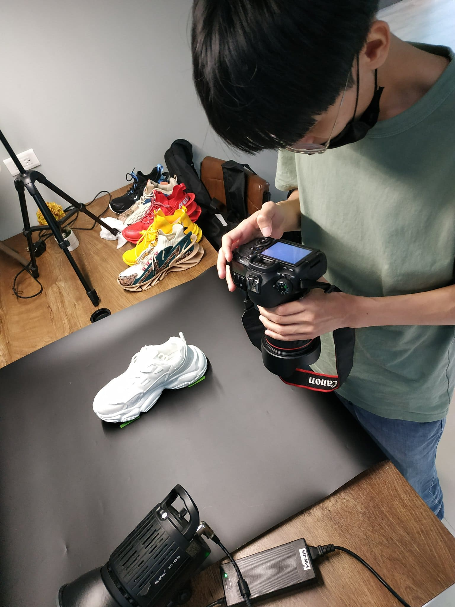
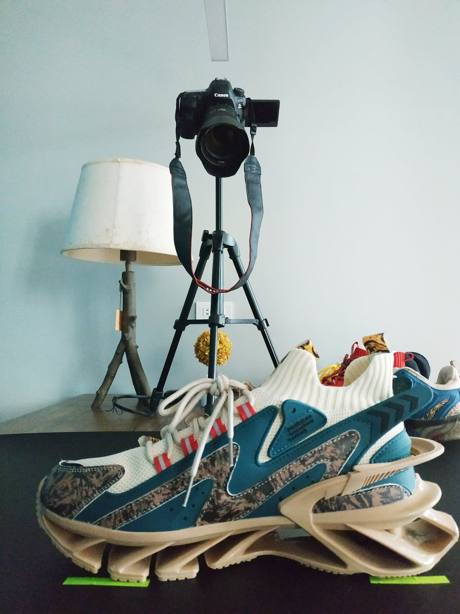
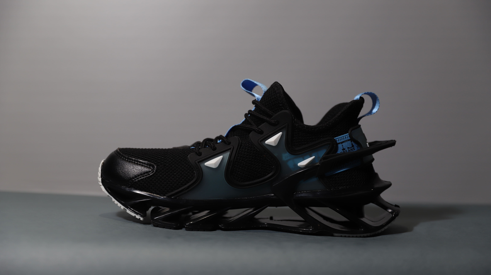
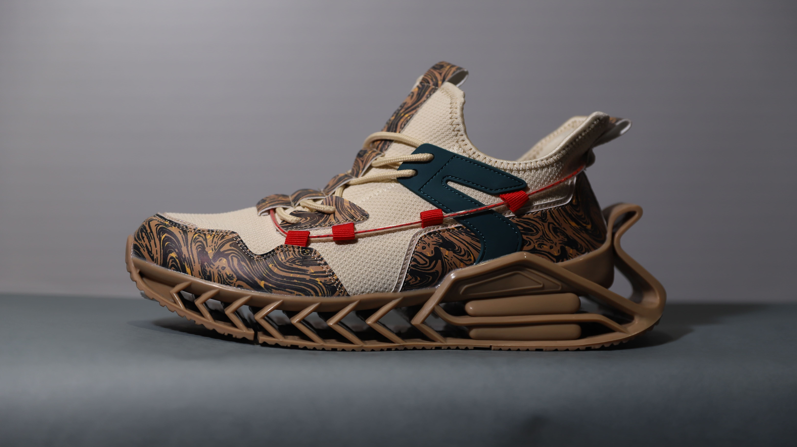
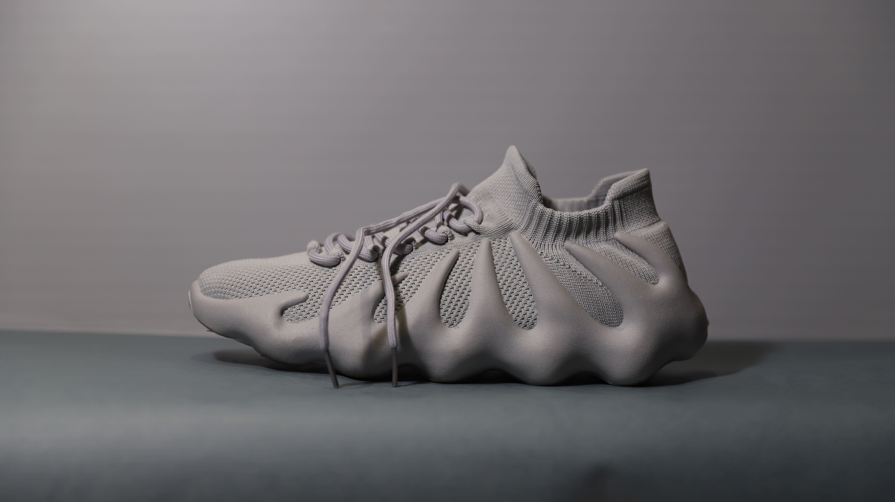
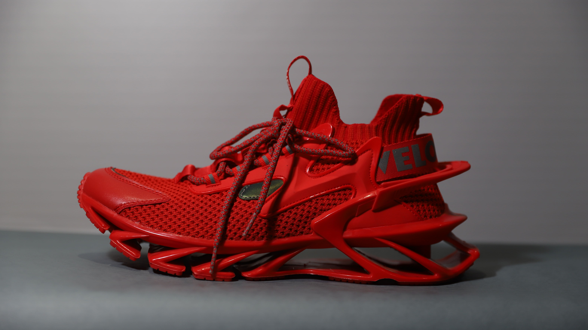
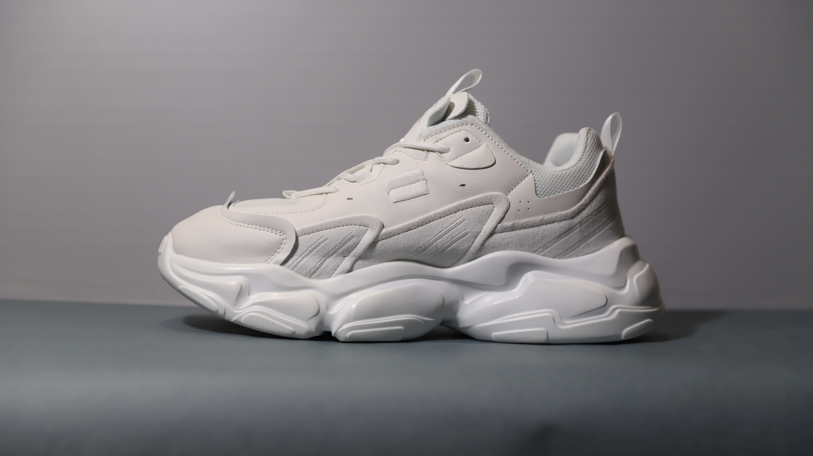
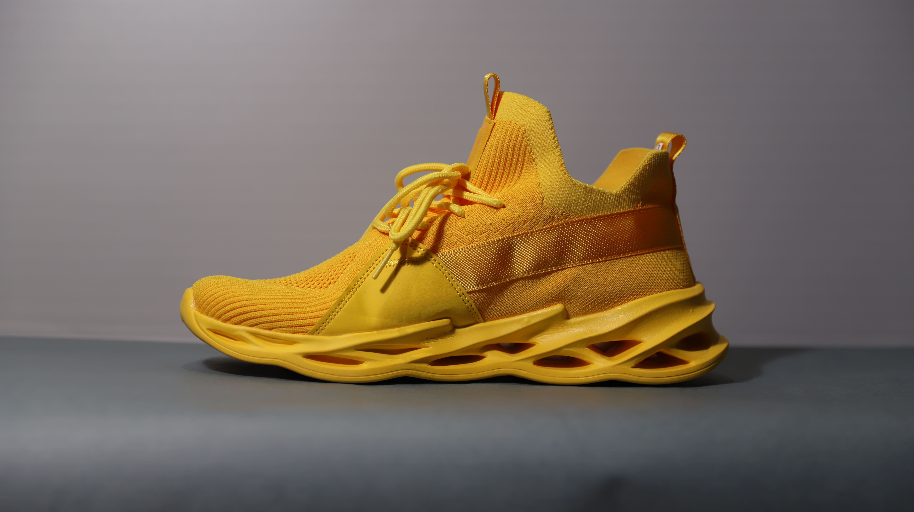
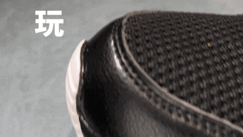
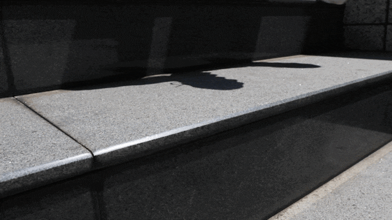

錄像專案介紹
此錄像專案為選品店 Socialbuy 所創實驗品牌 PANZER 主打特色鞋款打造的廣告影片。


拍攝過程
在規劃形象影片時，從品牌核心理念出發，設計出能展現 PANZER 特色鞋款的視覺敘事結構。
拍攝順序
在確定了影片的主要情境與畫面語言後，設計出轉場的節奏與過渡方式，傳遞鞋款的設計細節與風格。
- 行走畫面
- ➡︎
- 跳轉畫面
- ➡︎
- 定格動畫
- ➡︎
- 完結資訊






素材篩選與整理
首先篩選出最能展現鞋款特點的照片與影片，並按場景分組，為後續剪輯建立清晰的邏輯框架。
轉場設計
動態錄像部分以腳部為焦點，著重展現鞋款在日常生活中的特點與魅力。
透過影像中多樣化的動作進行銜接，使畫面的過渡更加流暢自然，進一步突顯鞋款的功能性與設計感。
- 
- 
節奏控制
剪輯時特別關注影片的節奏感，通過快速切換的照片片段與慢鏡錄像的對比，讓影片張弛有度。
音樂的節拍與畫面切換精確對齊，增強了影片的代入感。
細節優化
結尾處加入品牌 Logo 和口號，強化觀眾的記憶點。